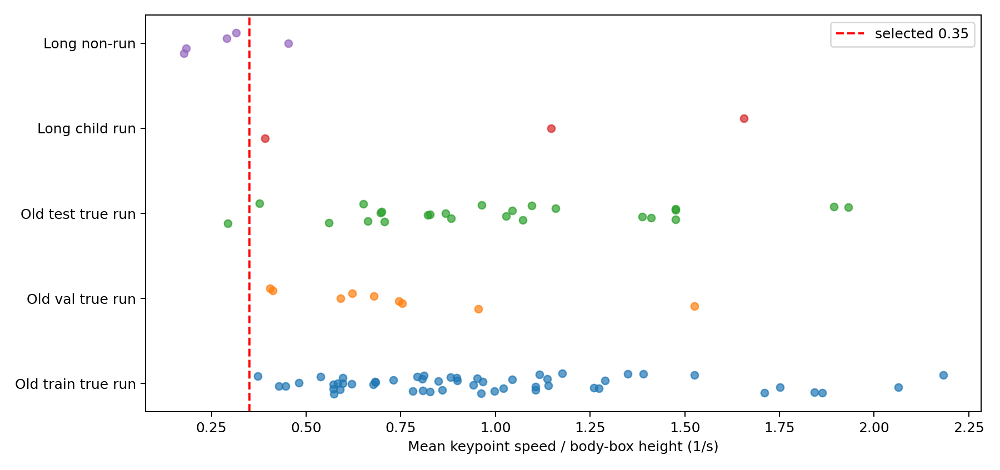
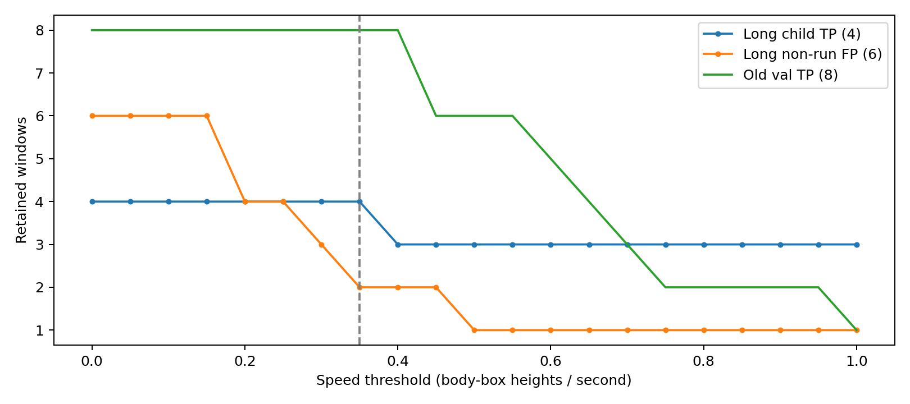

跑动速度先验：0.35 人体框高度/秒
新长片审核误报6→2，儿童4/4保持；缺骨架时保留原判断。仍有重叠人体和远处缺骨架误报，完整结果全部保留。
报告 · 完整核验 · XCLIP实验


原触发人物审核

long-videos/new-01 / vlc-record-2026-10-20-08h45m12s-存储_一层展厅内中心屏_20261005130000_20261005135959_1.avi-.avi
跑动窗 10 → 6；片段6。
片段2 片段3 片段4 片段5 片段6 片段7
long-videos/new-07 / 存储_一层展厅5#屏_20261016145000_20261016145900.avi
跑动窗 0 → 0；片段2。
片段9 片段10
long-videos/new-09 / 存储_一层展厅内中心屏_20261016144800_20261016145200.avi
跑动窗 0 → 0；片段1。
片段12
short-videos/220255c6344fa810 / 追逐38.mp4
跑动窗 2 → 2；片段1。
片段14
short-videos/8ac476f8fb995f97 / 追逐24.mp4
跑动窗 6 → 6；片段1。
片段16
short-videos/adult-walk / adult-walk.mkv
跑动窗 2 → 0；片段0。
short-videos/c4ebf78868c388a0 / other186.mp4
跑动窗 1 → 1；片段1。
片段19
short-videos/child-across / child-across.mkv
跑动窗 2 → 2；片段1。
片段21
short-videos/child-away / child-away.mkv
跑动窗 0 → 0；片段1。
片段23
short-videos/de33753bf592c4cc / 追逐30.mp4
跑动窗 0 → 0；片段0。
short-videos/de7f71c723b0f8d2 / 追逐40.mp4
跑动窗 6 → 6；片段1。
片段26
short-videos/overlap-walk / overlap-walk.mkv
跑动窗 1 → 1；片段1。
片段28
short-videos/slow-walk / slow-walk.mkv
跑动窗 1 → 0；片段0。